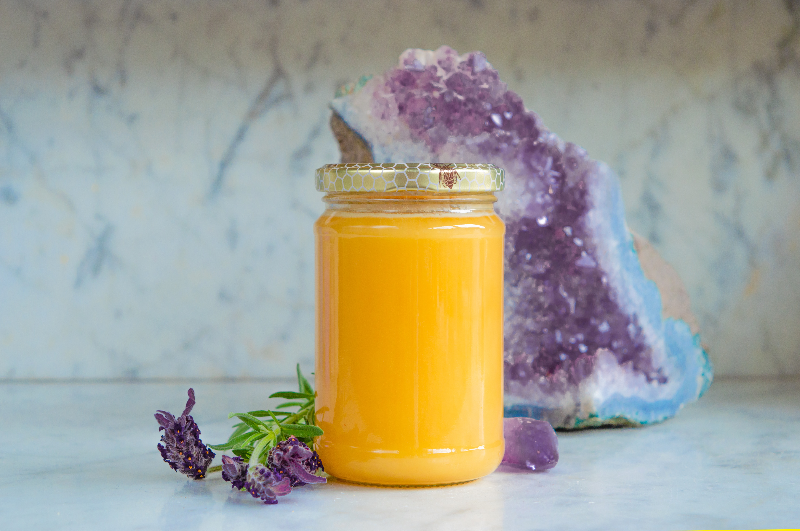
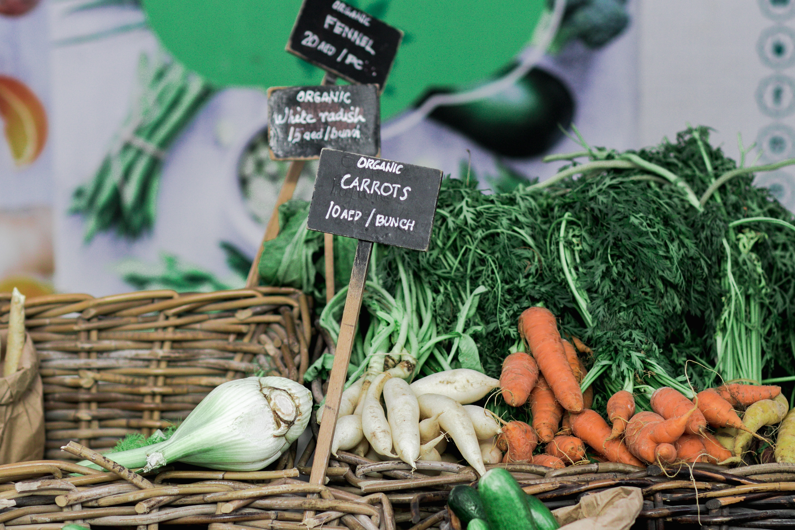
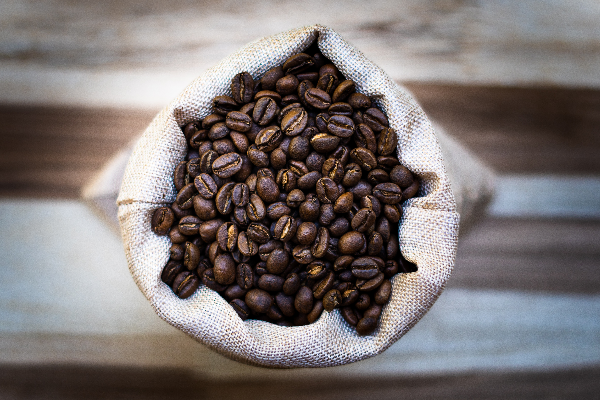

Featured Products

Indulge in the golden sweetness of our pure, organic honey.

Experience the vibrant goodness of our organically grown vegetables.

Elevate your cooking with the exquisite flavors of our cold-pressed organic olive oil.

Awaken your senses with our meticulously roasted organic coffee beans.